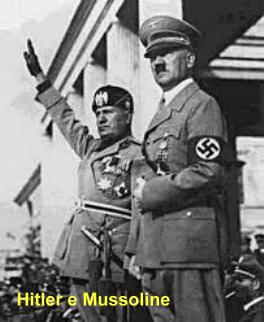
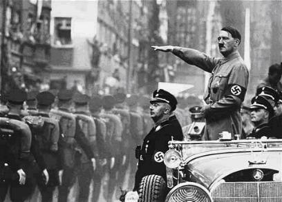
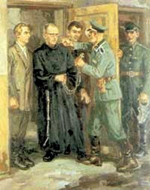
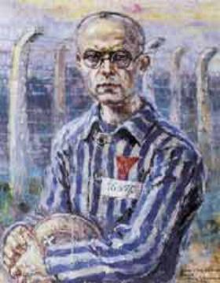
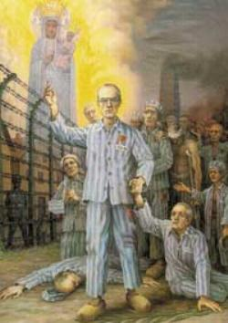
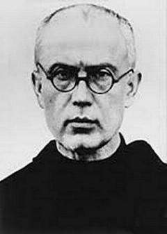

A SEGUNDA GUERRA MUNDIAL
V�rios fatores influenciaram a
eclos�o do conflito mundial. Entretanto, sem d�vida, um dos motivos mais fortes
foi o surgimento na Europa, na d�cada de 
Na It�lia cresceu o Partido Fascista, liderado por Benito Mussolini, que se tornou o �Duce�, com poderes plenos e absoluto, sem limites.
Outro fator que influenciou preponderantemente, tanto na It�lia como na Alemanha, foi que na d�cada de 1930 estes dois pa�ses passavam por grave crise econ�mica, com milh�es de pessoas sem emprego. E desse modo, uma das solu��es encontradas por estes pa�ses, foi a industrializa��o maci�a na fabrica��o de armamentos e equipamentos b�licos (avi�es militares, submarinos, tanques, navios de guerra, etc.).
Por outro, na �sia, o Jap�o apesar de se encontrar em excelente estabilidade financeira, possu�a fortes desejos de expandir o seu territ�rio, e com este objetivo, h� tempos vivia em amea�as e escaramu�as militares com a Manch�ria e com a China. Ent�o, estes tr�s pa�ses (Alemanha, It�lia e Jap�o) assinaram diversos acordos militares, formando o famoso �EIXO�, que pretendiam realizar conquistas expansionistas e ocupar o mundo, no interesse comum.
Definidos os objetivos, considera-se como ponto inicial da Guerra, a invas�o da Pol�nia pela Alemanha, no dia 1� de Setembro de 1939. Logo em seguida, dois dias depois, em consequ�ncia dos Tratados Militares existentes na Europa, a Fran�a e a Inglaterra declararam guerra a Alemanha. A movimenta��o militar foi muito grande, envolvendo outras na��es e praticamente deixando o mundo inteiro dividido em duas partes: aqueles favor�veis ao �EIXO� contra os outros pa�ses �ALIADOS� , encabe�ados pelos Estados Unidos, Inglaterra e R�ssia e com a colabora��o de muitos outros pa�ses, inclusive o Brasil. Foi um terr�vel conflito global que durou de 1939 a 1945, com uma impiedosa destrui��o de cidades e uma impressionante quantidade de mortes, entre 50 e 70 milh�es de pessoas morreram no conflito, principalmente civis.
Os principais pa�ses envolvidos, dedicaram toda a sua capacidade econ�mica, industrial e cient�fica, a servi�o dos �esfor�os de guerra� para produzir em massa, a fim de oferecer melhores condi��es aos seus militares. A guerra ficou marcada por um significativo n�mero de ataques contra civis, incluindo abomin�veis �persegui��es�, e tamb�m o detest�vel �Holocausto� contra os judeus, e inclusive, contra os poloneses e prisioneiros dos outros pa�ses inimigos, num absurdo plano de �exterm�nio total�.

De sa�da, a Alemanha anexou a �ustria, a qual logo ficou fazendo parte do III Reich. Hitler falava que seu pa�s precisava de espa�o vital. Exigiu que a Pol�nia lhe entregasse Dantzig e o corredor polon�s, para ter acesso ao mar B�ltico. Os Poloneses recusaram. Hitler mandou as suas for�as invadir e destruir tudo. Morreu muita gente e foram feitos milhares de prisioneiros. A �ltima resist�ncia era Vars�via, e sobre ela, a avia��o alem� despejou toneladas e toneladas de bombas, destruindo 80% dos edif�cios e casas. Em 19 dias a Alemanha Nazista arrasou a Pol�nia que virou um monte de ru�nas. N�o houve tempo para evacuar a cidade, por essa raz�o, a mortandade civil foi imensa. A Gestapo, que era a pol�cia Nazista, atuava de maneira severa, covarde e de uma ferocidade animalesca, prendendo e enchendo as pris�es de v�timas, destruindo ideais, esperan�as e a vida de homens, mulheres, jovens e crian�as. Os abomin�veis SS, constitu�am a elite das for�as de Hitler, e eram homens e mulheres frios de sentimento e indiferentes a dor alheia, fuzilavam as pessoas num apavorante e incans�vel programa de �exterm�nio total�.
Com a rendi��o da Pol�nia, o russo comunista Joseph Stalin que tinha um �Tratado de N�o Agress�o� com a Alemanha, aproveitou a ocasi�o e, com seus ex�rcitos invadiu o outro lado da Pol�nia, dividindo o pa�s em duas partes: a Pol�nia Nazista e a Pol�nia Comunista.
Hitler zombava das pot�ncias �ALIADAS� (no momento era Fran�a e Inglaterra) e continuava firme nas suas agress�es. Bombardeou Londres dia e noite com as Bombas Voadora V-2, causando p�nico, morte e muita destrui��o. E a seguir, do dia 5 a 24 de Junho de 1940, ocupou a B�lgica, a Holanda e invadiu a Fran�a, numa terr�vel Blitzkrieg. Estes f�ceis triunfos envaideceram Hitler, que se sentia invenc�vel e todo-poderoso. E assim, n�o querendo dividir a Pol�nia com a R�ssia, almejou tamb�m destru�-la. Mas os seus Generais temerosos n�o aconselhavam a campanha militar contra os Comunistas, pois o territ�rio russo � muito grande e aproximava o tempo do Inverno. Junto a esta realidade tamb�m havia o fato de que Hitler tinha assinado com Stalin um �Tratado de N�o Agress�o�� Mas Hitler n�o quis saber de conversa e deu ordem aos seus Generais, ataquem j�! E isso aconteceu no dia 22 de Junho de 1941.
Todo material b�lico alem�o ficou concentrado na Pol�nia, pois os Nazistas queriam atacar primeiramente a Ucr�nia. Ent�o era necess�rio limpar toda a �rea, a fim de garantir a retaguarda. E desse modo, todos os dias, milhares de poloneses eram fuzilados. E da mesma forma, os Alem�es tamb�m atacaram os Russos, que ocupavam o outro lado da Pol�nia, que apavorados com o poderio militar alem�o recuaram para o seu territ�rio. Os poloneses sofreram todos os tipos de crueldade. Aqueles que tinham certa lideran�a, e podia representar qualquer perigo para o III Reich, eram presos e sumariamente trucidados. Ali�s, este procedimento dos alem�es j� vinha ocorrendo h� algum tempo, com a finalidade de n�o sofrerem nenhum tipo de amea�as dentro das �reas ocupadas.
E para abrigar tantos prisioneiros, os Nazistas tiveram a id�ia de criar os �Campos de Concentra��o�, verdadeiros antros de exterm�nio, que n�o oferecia nenhum tipo de esperan�a de vida ou de liberdade, aos que se encontravam l�. E como eram muitos prisioneiros, haviam muitos Campos: Ravensbrueck, Dachau, Buchenwald, Amtitz, Gross-Rosen, Dora, Mauthausen, a pavorosa Treblinka, Sobibor, Majdanek, Bergen-Belsen e a infernal Auschwitz.
PADRE KOLBE � PRESO
No conceito Nazista, havia um Frade
Franciscano que incomodava o III Reich com suas publica��es. Por isso, no dia 17 de
Setembro de 1940, Padre 
No dia 8 de Dezembro de 1940, festa da IMACULADA CONCEI��O DA VIRGEM MARIA, Padre Kolbe e os demais Frades foram colocados em liberdade! Uma surpresa que ningu�m esperava, mas que evidentemente causou muita alegria. Aos poucos foram voltando para Niepokalan�w. Entretanto, nem todos puderam voltar, porque alguns eram procurados pela Gestapo. Mas o Padre Maximiliano Kolbe n�o alimentava ilus�es, sabia que n�o ia sobreviver a esta guerra. Lembrava-se da sua inf�ncia e da �coroa vermelha�que a VIRGEM MARIA lhe mostrou.
E assim aconteceu:
Dia 17 de Fevereiro de 1941, pela parte da manh�, um estranho carro preto parou � frente do Convento. Todos sabiam que era um carro enviado pela Gestapo. Alguns indiv�duos descem do carro e acionam a campainha do Convento. O Frade porteiro ao abrir a porta, se assustou com os homens e correu para avisar o Superior, Padre Kolbe. O Padre entendeu a presen�a dos Nazistas e disse ao porteiro:
- �Est� bem. J� vou. MARIA IMACULADA me d� for�as�.
Frei Kolbe foi ao encontro dos Nazistas, e como de costume, os saudou:
- �Louvado seja NOSSO SENHOR JESUS CRISTO�.
Os Alem�es n�o responderam, mas um deles perguntou:
- �Voc� � Maximiliano Kolbe�?
- �Sim, eu sou Maximiliano Kolbe� , respondeu o sacerdote.
- �Ent�o, venha conosco�. Ordenou o Nazista.
Foi preso com mais quatro Padres. (Desses somente dois sobreviver�o).
Antes de entrar no carro, Frei Kolbe olhou pela �ltima vez a sua querida Niepokalan�w com seus irm�os a porta do pr�dio. Do fundo do cora��o aben�oou cada um deles. Ele estava convencido interiormente de que nunca mais voltaria para junto daqueles queridos irm�os.

- �Imbecil, cretino, porco, padreco, v� me dizendo se acredita nessa bobagem�? Ao mesmo tempo pegando no Crucifixo do Ros�rio que o Padre trazia na cintura.
- �Sim, eu acredito�. Respondeu calmamente o Padre Kolbe.
R�pidamente um forte tapa estalou no rosto do pobre Frade que chegou a dobrar o corpo e sentiu na boca o gosto de sangue.
- �Ent�o, voc� ainda acredita�? Perguntou o Nazista.
- �Sim, eu acredito�. Disse o Padre Kolbe.
O Nazista irado desfechou uma saraivada de socos dizendo terr�veis blasf�mias. O rosto do Padre ficou marcado pela viol�ncia e com dificuldade ele conseguiu se levantar do ch�o.
- �E ent�o, diga-me se ainda acredita�? Indagou o Nazista espumando de �dio.
- �Sim, eu acredito�. Respondeu o Padre Kolbe com extrema dificuldade.
A ira do carrasco Nazista explodiu sem limites, desfechando violentos socos, pontap�s e terr�veis blasf�mias, deixando o Padre prostrado no ch�o. Cansado de bater e de xingar palavr�es, virou as costas e bateu a porta, deixando o local, enquanto Padre Kolbe permaneceu quase desmaiado no ch�o. Aos poucos foi se levantando, seu rosto estava cheio de hematomas e sangrava. Seus companheiros de cela estavam revoltados com a cena, mas Padre Kolbe procurou acalm�-los. Mal podendo falar, disse:
- �N�o � nada! Seja tudo em honra da IMACULADA! DEUS tenha piedade dele�!
Os m�dicos, tamb�m prisioneiros, rapidamente o levaram para a enfermaria, para trat�-lo e tamb�m com receio de que o algoz voltasse para extravasar todo o seu �dio contra o Padre. Na enfermaria ele estaria livre daquele monstro.
Alguns dias ap�s este acontecimento vieram vinte (20) Frades do Convento de Niepokalon�w at� a pris�o e se ofereceram ao Comandante, para ficar no lugar de Maximiliano Kolbe. O Comandante n�o aceitou a troca, o Nazista considerava o Padre Kolbe um prisioneiro muito importante, que tinha muita influ�ncia, e por isso mesmo, era muito perigoso para o III Reich.
Na pris�o, Padre Kolbe raramente podia escrever e tudo era rigorosamente censurado. A �ltima carta que escreveu na pris�o de Pawiack foi dia 12 de Maio. Reproduzimos a seguir um pequeno trecho:
�A IMACULADA, nossa M�e amorosa, sempre nos rodeia de cuidados e de ternura, e velar� sempre� Por que voc�s se preocupam, meus filhos? Nada de mal nos pode acontecer, se DEUS e a IMACULADA n�o o permitirem. Deixemo-nos ser conduzidos por Ela, cada vez mais docilmente, para onde Ela nos quiser levar, seja qual for o Seu desejo, a fim de que, cumprindo nosso dever filial, possamos por meio do amor, salvar todas as almas�.
A pris�o de Pawiack estava lotada, precisavam transferir prisioneiros para dar lugar aos novos. Entre os nomes da longa lista de transfer�ncia, estava o de Padre Maximiliano Kolbe, que foi enviado ao Campo de Concentra��o de Auschwitz, o mais terr�vel e cruel de todos, onde os prisioneiros sofriam as mais atrozes torturas f�sicas e do esp�rito. Os fornos cremat�rios fumegavam dia e noite, procurando aprimorar seus m�todos de exterm�nio, cumprindo a ordem de Himmler: �A Solu��o Final�.
O trem superlotado partiu da Esta��o Norte
de Vars�via para �swiecim, onde est� o famoso Campo de Concentra��o. Segue devagar, por que
vai parar 
Maximiliano foi colocado no Bloco 14, e a partir de agora, n�o tem mais nome, � identificado por um n�mero. Seu n�mero fixado pelos nazistas � 16.670. Nas divis�es feitas pela administra��o do Campo, Padre Kolbe ficou na companhia �Babice�, que era a mais atormentada de todas, e tinha por chefe um monstro sat�nico e sanguin�rio de nome Krott.
A escritora Maria Winowski, sobrevivente deste Campo de exterm�nio, foi biografa de Maximiliano Kolbe, e conta ter ouvido de uma testemunha ocular, Padre Sweda, detalhes dos tormentos e do inferno que Frei Kolbe suportou em Auschwitz. S� para se ter uma id�ia, chamar o tal carrasco Nazista Krott de dem�nio, � um elogio, corresponderia a cham�-lo de santo, porque ele foi t�o barbaramente ruim, perverso e maldoso, que o dem�nio � santo perto dele. Por isso, n�o vamos transcrever na �ntegra os cru�is e sat�nicos sofrimentos do Padre Kolbe, por que al�m de desumanos, causa mal estar a quem l�. A seguir, apenas citaremos alguns fatos, a fim de que cada leitor possa fazer uma id�ia e imaginar sobre os mesmos, concluindo sobre o abomin�vel e terr�vel supl�cio do Padre Kolbe no Campo de Concentra��o de Auschwitz.
Krott tinha um terr�vel e feroz �dio contra os Padres. Assim que viu o Padre Kolbe tratou de persegui-lo convenientemente, preparando as piores e mais cru�is maldades, para acabar com ele de uma vez. Esse inferno durou 14 dias.
Um dia Krott observou como o seu prisioneiro se arrastava com dificuldade. Ele pensou, vou me divertir mais um pouco com esse porco polon�s. Era comum o prisioneiro transportar troncos de madeira, para abastecer os fornos cremat�rios. Ent�o, ele separou uns troncos mais pesados e mandou o Padre coloc�-los nos ombros para transport�-los correndo. Frei Kolbe tentou executar a ordem, esbo�ou uns passos, e logo a sua vista escureceu e ele caiu. O Nazista ferozmente se atirou sobre ele, dando-lhe botinadas no ventre e no rosto, gritando histericamente:
- �Padre porco!... N�o quer trabalhar, hein? Pregui�oso! Vou lhe mostrar como se deve trabalhar�.
Na hora da minguada refei��o, chamou Kolbe e mandou que ele deitasse sobre um monte de lenha. Depois, chamou um carrasco e ordenou que lhe aplicasse cinquenta chicotadas. Terminado o castigo Frei Kolbe n�o mais se mexeu. Ent�o Krott arrastou-o para dentro de uma valeta, jogou galhos por cima e o considerou morto.
Naquele momento, ningu�m podia
fazer nada por ele. Qualquer tentativa poderia piorar a situa��o. Quando anoiteceu
e encerraram os trabalhos, seus companheiros foram examin�-lo. Ele ainda estava vivo,
ent�o o levaram para o bloco 14. No dia seguinte, Padre Kolbe foi dispensado dos
trabalhos e foi 
Padre Kolbe era um homem bom e tinha o cora��o aberto, fazia amizade com todos, rezava com eles e consolava as suas dores. At� os enfermeiros gostavam dele e sempre procuravam ajud�-lo de alguma forma. Padre Sweda descreve que numa tarde, um enfermeiro levou-lhe as escondidas um copo de ch�. Para aqueles doentes que ardiam em febre era uma bebida dos deuses. Educadamente Frei Kolbe rejeitou a bebida, dizendo:
- �Os outros n�o tem ch�, eu tamb�m n�o quero. N�o desejo ser exce��o�.
Ele tinha verdadeiramente um esp�rito de Ap�stolo, queria salvar todas as almas que pudesse. Mesmo havendo severa proibi��o e amea�as de duros castigos, durante a noite atendia confiss�o aos doentes. A noite inteira, na escurid�o, os doentes se arrastavam entre as camas como podiam, para receber o Sacramento da Confiss�o. E muitas vezes, ele atendia incansavelmente at� o amanhecer.
Conta Padre Sweda que em muitas ocasi�es, Padre Kolbe dividia a pequena ra��o de comida que recebia, com os seus companheiros, dizendo com candura:
- �Voc�s est�o com mais fome do que eu�!
Ele n�o perdia uma oportunidade para realizar algum tipo de apostolado, que ajudasse ou consolasse alguma pessoa. E assim eram os seus dias no Campo.
Apesar de todos os esfor�os dos amigos, ele n�o pode continuar no bloco dos inv�lidos, teve de retornar ao bloco 14. Ali o esperava uma suprema prova��o.